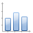
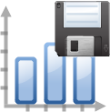

Main GUI¶

The main Experiment GUI
When you first start the program, the main GUI consists of a central area with plot windows surrounded by various control docks, with an action toolbar on top. The effects of the different toolbar actions are:
 – start a scan
– start a scan- This will run the scan set in the scan control dock, with the evaulation set in the evaulation control dock. When the scan concludes, it will run the analysis set in the analysis control dock.
 – pause a scan
– pause a scan- This will pause the scan wherever it currently is.
 – stop a scan
– stop a scan- This will stop the scan, but will still perform the analysis and register the scan in the measurement log.
- – abort a scan
- This will stop the scan, but will NOT perform the analysis or register the scan in the measurement log.
 – save GUI configuration data
– save GUI configuration dataThis will save the GUI configuration to a new database file with the name “configuration_X.db” (where X is 001 the first time you hit save, then increments) which will be placed in the day’s data directory. This can be used if you want to take a snapshot of your GUI configuration which you can later return to. Each time you click save, a new file is created. To reload the GUI configuration, copy the saved file to ‘yourProjectDir/.gui-config’, and rename it ‘ExperimentUi.config’.
Note that this is not for ordinary saving of the GUI configuration – this happens automatically once a minute, and whenever the program is closed.
 – save experiment configuration data to an XML file
– save experiment configuration data to an XML file- This will save all the global variables, scan settings, evaluation settings, analysis settings, and pulse program settings to XML files. These files can be imported via File > Import XML. This is mainly useful if you want to move a large list of experiment settings between projects.
 – open the Dedicated Counters window.
– open the Dedicated Counters window. – open the Pulse Program window.
– open the Pulse Program window. – open the Voltage Control window.
– open the Voltage Control window. – open the Logic Analyzer window.
– open the Logic Analyzer window.- – open the Measurement Log window.
 – open the Scripting window.
– open the Scripting window.- or
 – display if an exception occurred
– display if an exception occurred - The will turn into a when an error occurs. If you click on it, you will see a list of all exceptions since the list was last cleared. You can clear the list, or clear individual exceptions.
- or
 – display if a warning occurred
– display if a warning occurred - The will turn into a when a warning occurs. Interface is the same as for exceptions.
-  – copy histogram to traces
- This will copy the last histogram from the most recent scan to the trace list together with the other traces. From there it can be saved or viewed later.
-  – save all histogram from last scan
- This will save every histogram from the most recent scan to a file. It does not create an entry in the trace list. The filename used is specified in the scan control (see Scans).
 – add a plot
– add a plot- This will add a plot window, which will available for any evaluation.
 – remove a plot
– remove a plot- This will remove an existing plot window. Note: “Scan Data” and “Histogram” (and “Timestamps” if enabled) cannot be removed.
- – rename a plot
- This will rename an existing plot window. The same plots which cannot be removed also cannot be renamed.
{kind=link}
{kind=link}
{kind=link}
{kind=link}
{kind=link}
{kind=link}